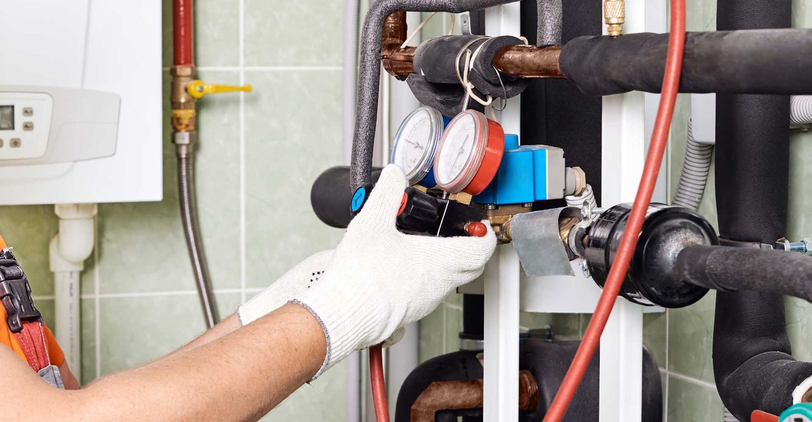
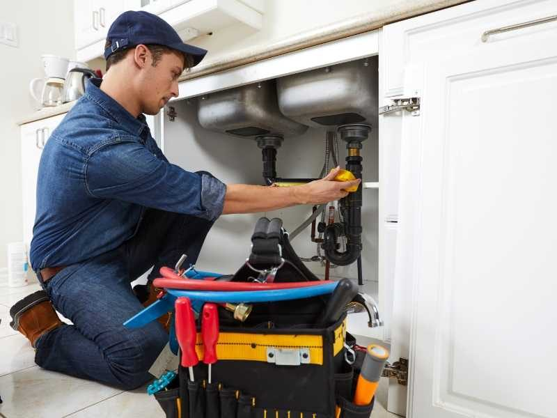
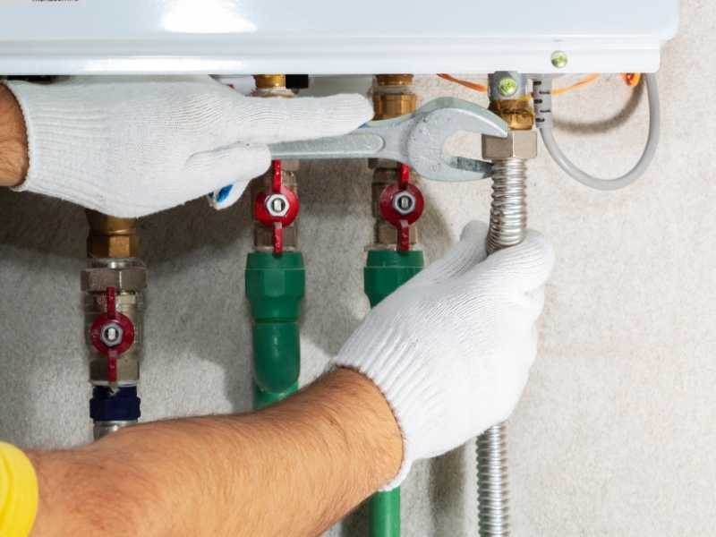
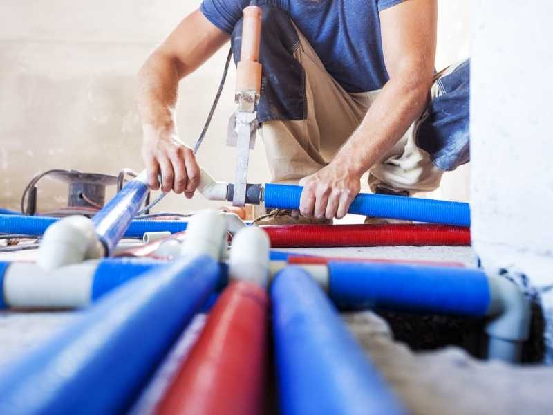
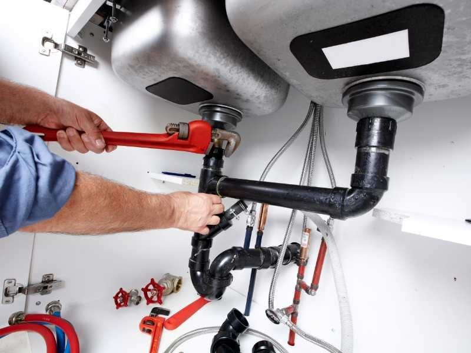

Installation, entretien, maintenance et depannage. De la fuite d'eau a la salle de bains complete sur mesure.
Une nouvelle installation sanitaire ? Une panne ? Une mise aux normes ? Une creation de salle de bains sur mesure ? Notre plombier procede a l'installation, l'entretien, la maintenance et le depannage de votre plomberie.
Pourvu d'une camera de detection de fuite d'eau et de toutes les competences techniques requises, notre artisan intervient aussi pour rechercher la fuite et trouver la solution ideale pour y remedier.


Ayant travaille avec un ergotherapeute, SPEC TOBI a a coeur d'ameliorer le confort et l'autonomie des personnes a mobilite reduite : douche extra-plate, barres de soutien, siege de douche, WC surelve, lavabo rabaisse.
En partenariat avec un bureau d'etude, notre artisan realise aussi l'etude geologique et des travaux d'assainissement.


Reponse rapide et devis gratuit, sur Nice et tout le bassin azureen.